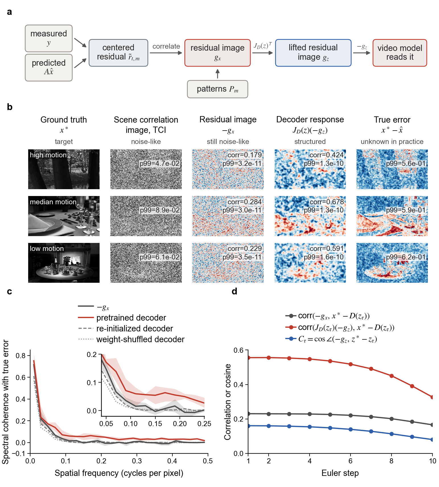
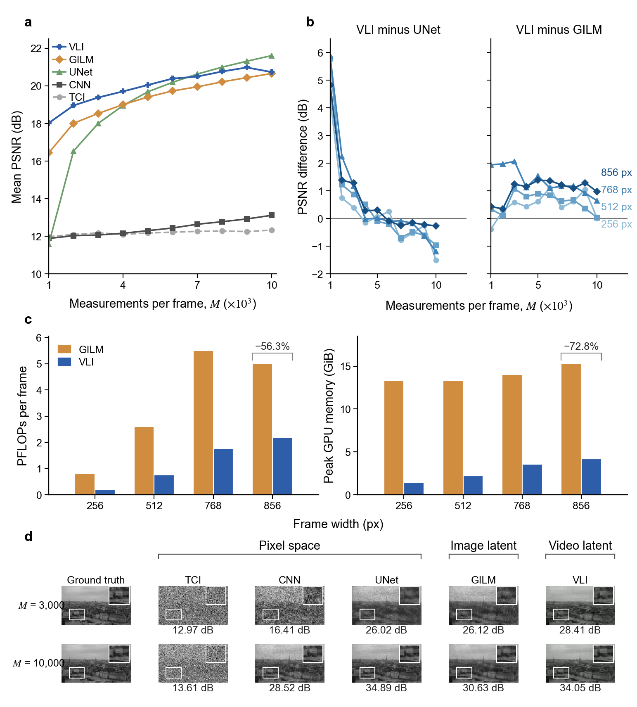

Lifting residual images into a video latent space makes inversion scalable
Through the pretrained video decoder, the noise-like residual image becomes a structured correction that agrees with the true error better than through re-initialized or weight-shuffled decoders. Video-latent inversion (VLI), which reconstructs five frames jointly in this latent space, outperforms pixel networks and frame-wise image-latent reconstruction (GILM) when bucket values are scarce.
At 1,000 bucket values per frame, averaged over four resolutions and five test videos, VLI reaches 18.02 dB against 16.44 dB for GILM and 11.59 dB for a U-Net. At 856×480 with 10,000 bucket values per frame, joint inversion needs 56.3% less computation and 72.8% less peak GPU memory than GILM.

Figure 1. A noise-like residual image becomes a structured video correction through the pretrained decoder.
a The residual between predicted and acquired bucket values, correlated with the coding patterns, gives the residual image gx. The transposed Jacobian of the LeanVAE decoder lifts it into the latent space as gz.
b Ground truth, scene correlation image of traditional correlation imaging (TCI), residual image, decoder response and true error for windows of highest, median and lowest motion. Corr is the Pearson correlation with the true error.
c Band coherence with the true error for the residual image and for the decoder responses of pretrained, re-initialized and weight-shuffled decoders.
d Directional fidelity along a ten-step trajectory, the cosine between the lifted residual image and the true latent correction.

Figure 2. Measurement, spatial and computational scaling across reconstruction spaces.
a PSNR versus M, the bucket values per frame, for TCI, a convolutional network (CNN), a U-Net, frame-wise image-latent reconstruction (GILM) and video-latent inversion (VLI).
b PSNR advantage of VLI over the U-Net and over GILM across M and resolution.
c Computation per frame and peak GPU memory of GILM and VLI, with the reduction relative to GILM.
d Reconstructions of all methods at two values of M.